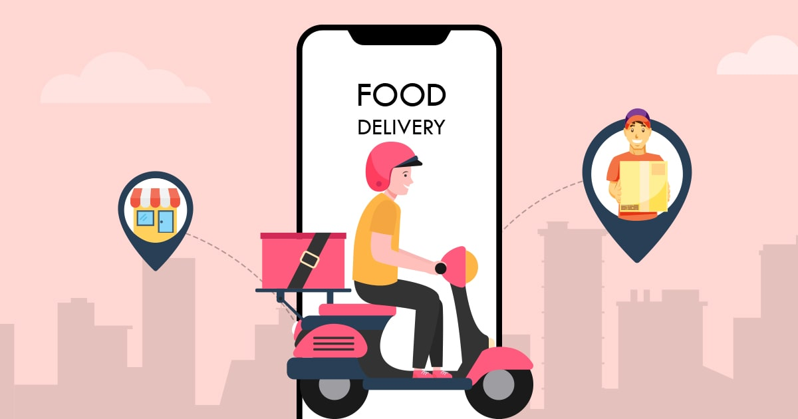

Portfolio Gallery

Time Master is a time management app that is based on the principles of Pomodoro Technique, and it helps users manage their daily tasks/work and use time more wisely. It is a new way to stay off your phone, focus on your own task, and manage your daily tasks more wisely based on the principles of Pomodoro Technique. You are able to create and organize your day into task blocks so that you can focus on completing them one at a time in a 25-minute time block. You can also join the global ranking and check how many tasks they completed while having interactions (receiving notifications) with them in the global social networks.
Click here to watch the demo
This food delivery web application is named “FeedMe”. It is developed to build up an efficient online food ordering and delivery service. Users are required to create an account on our website landing page for security. Users are able to order from the menu, track the couriers delivery and rate the order afterwards. Users can search for food based on the type of the cuision, the location, and the price range.
Click here to watch the demo